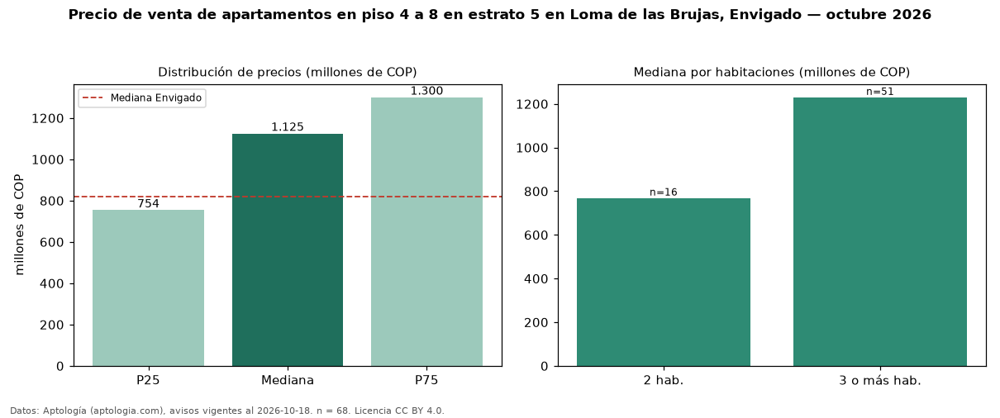

Precio de venta de apartamentos en piso 4 a 8 en estrato 5 en Loma de las Brujas, Envigado — octubre 2026
Con 68 avisos vigentes, el precio mediano de apartamentos en piso 4 a 8 en estrato 5 en venta en Loma de las Brujas, Envigado es COP 1,12 mil millones. Prácticamente coincide con la mediana de los apartamentos en estrato 5 en venta de Loma de las Brujas (COP 1,15 mil millones, n = 307); este segmento reúne el 22 % de esos avisos. Por metro cuadrado, la mediana es COP 8,88 millones/m² (n = 67), 1 % por debajo de los apartamentos en estrato 5 en venta de Loma de las Brujas (COP 8,97 millones/m²). El área mediana anunciada es 112 m². El segmento con más oferta es el de 3 o más habitaciones (51 avisos, mediana COP 1,23 mil millones); pasar de 2 habitaciones a 3 o más habitaciones cambia la mediana +60 %. La administración mediana declarada es COP 610.500 al mes (n = 55). La mitad central de los avisos va de COP 754 millones a COP 1,30 mil millones (razón 1,7), una dispersión moderada. La mediana de todos los apartamentos en venta de Envigado es COP 820 millones (+37 % de diferencia). Datos: Aptología (aptologia.com), CC BY 4.0 — https://www.aptologia.com/venta/envigado/loma-de-las-brujas. Archivos: PDF, CSV con las cifras y gráfica PNG.

| Avisos únicos | 68 |
|---|---|
| Percentil 25 | COP 753.750.000 |
| Mediana | COP 1.125.000.000 |
| Percentil 75 | COP 1.300.000.000 |
| Mediana por m² | COP 8.881.578 |
Fuente: avisos vigentes de portales inmobiliarios recopilados por Aptología, deduplicados (mínimo 30 avisos únicos por celda). Precios pedidos, no cerrados. Fecha: 2026-10-18.